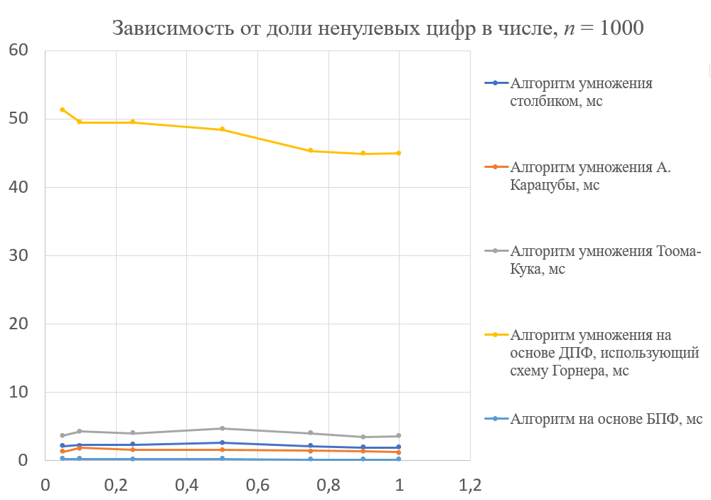

Сравнительный анализ алгоритмов умножения больших целых чисел
1. Введение
Актуальность темы: Алгоритмы умножения больших чисел являются ключевыми компонентами современных высокотехнологичных областей. Они лежат в основе криптографии — стойкость широко распространённого алгоритма RSA напрямую базируется на сложности факторизации произведения сверхбольших простых чисел. Эффективные вычисления необходимы в финансовом секторе для защиты транзакций, а также в научных расчётах и квантовом моделировании.
Проблема: Отсутствие актуальных и систематизированных рекомендаций по выбору метода умножения в зависимости от объёма обрабатываемых данных.
Цель проекта: Проведение сравнительного анализа алгоритмов умножения больших чисел и разработка практических рекомендаций по их выбору. Программная реализация всех методов выполнена на языке C++.
2. Рассмотренные алгоритмы
3. Теоретические оценки сложности
В ходе теоретического анализа были сопоставлены оценки временной сложности и затрат памяти для шести подходов:
| Название алгоритма | Временная сложность | Сложность по памяти |
|---|---|---|
| Классический алгоритм | O(n²) | O(n) — линейная |
| ДПФ по схеме Горнера (DFT-Horner) | O(n²) | O(n) — линейная |
| Алгоритм Карацубы | O(n¹˙⁵⁸⁵) | O(n) — линейная |
| Алгоритм Тоома–Кука | O(n¹˙⁴⁶⁵) | O(n) — линейная |
| Алгоритм на основе БПФ (FFT) | O(n log n) | O(n) — линейная |
| Алгоритм Шёнхаге–Штрассена | O(n log n log log n) | O(n) — линейная |
4. Результаты экспериментов
Тестирование проводилось в среде Microsoft Visual Studio 2022. Время выполнения измерялось с помощью библиотеки <chrono> с пятикратным усреднением. Основные результаты серии тестов:
- Зависимость от длины: Алгоритм БПФ — абсолютный лидер на всех размерах, начиная с n = 100 цифр (при n = 10000 время составило 3.68 мс). Второе место занял метод Карацубы. Классический алгоритм эффективен только при n ≤ 100.
- Потребление памяти: Наиболее экономичен классический алгоритм (160 КБ при n = 10000). Карацуба и Тоома–Кук требуют вдвое больше (320 КБ), спектральные методы самые требовательные (768 КБ).
- Влияние плотности чисел: Доля ненулевых цифр не оказывает существенного влияния на время выполнения, так как все алгоритмы работают с полными массивами фиксированной длины.

5. Практические рекомендации
На основе проведённых экспериментов были сформулированы четкие границы применимости методов:
🔹 До 100 цифр — классический алгоритм (из-за отсутствия накладных расходов);
🔹 От 100 до 500 цифр — алгоритм Карацубы;
🔹 Свыше 500 цифр — алгоритм на основе БПФ.